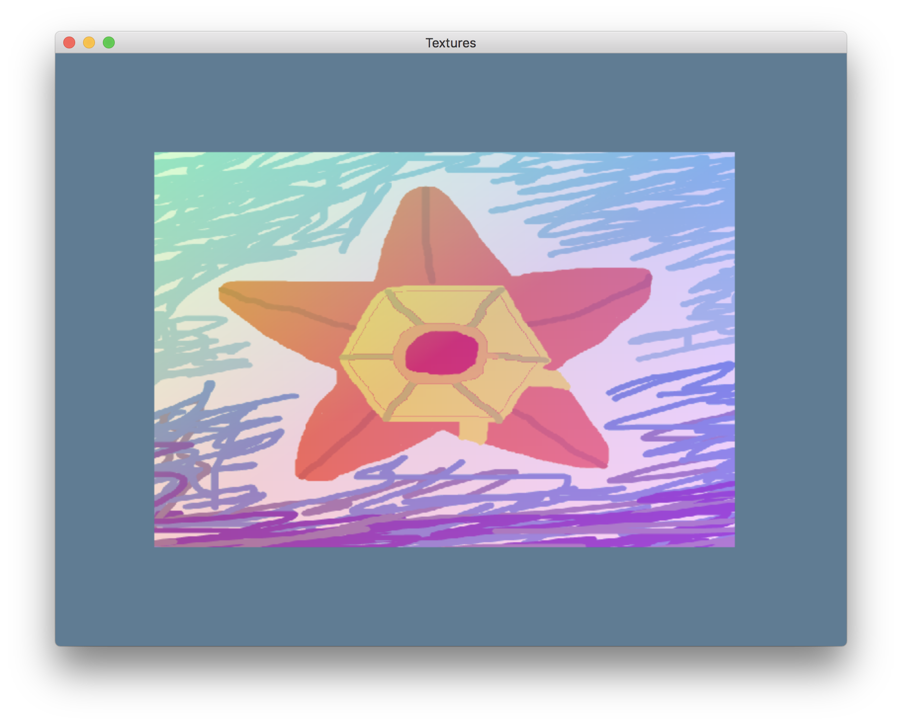

Textures
You can draw a lot with just triangles and colors. Do a search for "low poly art" and you'll find a bunch of stuff that's just lots and lots of color shaded triangles. Like the digital version of stained glass art. It's really cool.
But you can't make Skyrim or Smash Bros with just colored triangles. At some
point you want to stick a picture of a thing on those triangles. A picture that
you place onto a model is called a "texture", even though really it's just a
normal image. In fact, you can use gfx-hal to render into an image, then keep
that image around and use it to texture your models.
A picture has "pixels", and sometimes you'll hear about a texture having "texels". Just a way that some people distinguish between images intended for final use and images intended for placement onto a model. The thing that's the most special about textures is that since X, Y, and Z are already being used for 3D spatial positioning of a vertex, the position within a texture that it maps to is called U and V. This is called UV Mapping and it can get very complicated if you have a single texture being wrapped around a 3D model.
As always, each stage of this is hard enough already, so we'll keep it simple. This time out we're going to place a texture onto a "Quad" (two triangles oriented to make a quadrilateral). Like before, part of the quad will follow the mouse so that we can see it stretch around and even flip backwards when the mouse moves "behind" the start of the quad.
What picture? Well I've drawn a pic of a friendly water pal in MS Paint, just for this occasion. Here's a quarter-size sample:

Making A Quad
So instead of having a Triangle type, we're going to have a Quad type. What
makes up a quad? Of course it's four points instead of three.
# #![allow(unused_variables)] #fn main() { #[derive(Debug, Clone, Copy)] pub struct Quad { pub x: f32, pub y: f32, pub w: f32, pub h: f32, } #}
So if we have four "real" points, and we want to make two triangles... well we need 3 points per triangle... We could just list out some of the points more than once (scrub mode) or we could get fancy in how we tell the GPU to do it and kick it up to a technique called "Indexed Drawing" (cool mode). The details of that will be covered in a moment, right now we need to have a method to turn a quad into some vertex data.
# #![allow(unused_variables)] #fn main() { impl Quad { pub fn vertex_attributes(self) -> [f32; 4 * (2 + 3 + 2)] { let x = self.x; let y = self.y; let w = self.w; let h = self.h; #[cfg_attr(rustfmt, rustfmt_skip)] [ // X Y R G B U V x , y+h, 1.0, 0.0, 0.0, /* red */ 0.0, 1.0, /* bottom left */ x , y , 0.0, 1.0, 0.0, /* green */ 0.0, 0.0, /* top left */ x+w, y , 0.0, 0.0, 1.0, /* blue */ 1.0, 0.0, /* bottom right */ x+w, y+h, 1.0, 0.0, 1.0, /* magenta */ 1.0, 1.0, /* top right */ ] } } #}
As you can see, we're approaching the limit of being able to specify it all as a flat array. In future lessons we'll talk about having a proper Vertex type and giving it fields so that it's easier to tell what parts are what and such. For a single quad it's probably okay to do it like this.
So each vertex will have an XY position like before, and an RGB color like before, and now we're adding a UV texture coordinate as well. We'll also have to change around our pipeline setup to allow for the new vertex attribute.
Texture positions are always stored as 0.0 to 1.0 within the texture, U goes
horizontal (like X) and V is vertical (like Y). Within gfx-hal, the (0.0, 0.0)
position for UV coordinates is the top left corner of the image. Even if the
backend would normally use some other system, gfx-hal does the translations
necessary so that (0.0, 0.0) is the top left.
Note that some other graphics systems (mostly OpenGL) put the texture origin at
the bottom left instead! If you're trying out some shader code samples from
some other place and your images come out unexpectedly upside down, that's why.
You can compensate by flipping the image data before you upload it (I'll mention
that in a moment), or you can flip the computed coordinate before looking up the
data in the texture by using 1.0-V instead of using V directly.
Indexed Drawing
Indexed drawing is a way to save on vertex space by specifying the minimum number of vertices in just any order within an array, and then also specifying indexes into that array to describe the triangles themselves.
That might sound silly, at first. We save a little space on the vertex data that we didn't specify twice, but then we have to give all the indexes, so are we really saving much? Let's check.
Say we have 28 bytes per vertex (7 floats * 4 bytes each, that's what we have
right now), and also that indexes are given as u16 values:
- If there's a Quad:
- We reduce the vertex count from 6 to 4 (56 bytes saved)
- We need to spend 6 indexes to describe the triangles (12 bytes used)
- Net savings of 44 bytes per quad (56-12)
- If there's a Cube:
- We reduce the vertex count from 36 to 8 (784 bytes saved)
- We need to spend 36 indexes to describe the triangles (72 bytes used)
- Net savings of 712 bytes per cube (784-72)
- As the model shape gets more complex, causing more triangles to share the same vertex, the overall savings improve.
So, yeah, that's totally sweet.
Making A BufferBundle Type
First of all, now that we're having more than one buffer, we want to take that
buffer creation (declare buffer, check requirements, get memory, bind memory)
and pack it into its own thing. We'll call it a BufferBundle, because that
seems like a good enough name for a really generic sort of thing that we don't
even fully know how we'll use in the future.
The struct for it is very simple. We can even make it generic over the Backend
trait for maximum angle brackets in our code. (Rust is always better with more
angle brackets in the types, right?)
# #![allow(unused_variables)] #fn main() { pub struct BufferBundle<B: Backend, D: Device<B>> { pub buffer: ManuallyDrop<B::Buffer>, pub requirements: Requirements, pub memory: ManuallyDrop<B::Memory>, pub phantom: PhantomData<D>, } #}
We'll make all the fields be pub, because (hot take) that's honestly the
better default for fields, unless you're trying to maintain some invariants with
the type. The BufferBundle isn't smart enough to have any invariants.
So we've got it generic over Backend, and then our methods will be using a
particular Device, and it'd be slightly insane to try and use a buffer between
two different device implementations, so we'll throw in a 👻
PhantomData 👻
so that things know we had a particular device in mind when we made the buffer.
Is there anything that PhantomData can't solve? I sure hope not. 👻
Do we want this type to have any methods? Yeah, obviously, we want to be able to make new ones. We'll just cut that code for making the vertex buffer and then make it a little more buffer agnostic and reusable.
# #![allow(unused_variables)] #fn main() { impl<B: Backend, D: Device<B>> BufferBundle<B, D> { pub fn new(adapter: &Adapter<B>, device: &D, size: usize, usage: BufferUsage) -> Result<Self, &'static str> { unsafe { let mut buffer = device .create_buffer(size as u64, usage) .map_err(|_| "Couldn't create a buffer!")?; let requirements = device.get_buffer_requirements(&buffer); let memory_type_id = adapter .physical_device .memory_properties() .memory_types .iter() .enumerate() .find(|&(id, memory_type)| { requirements.type_mask & (1 << id) != 0 && memory_type.properties.contains(Properties::CPU_VISIBLE) }) .map(|(id, _)| MemoryTypeId(id)) .ok_or("Couldn't find a memory type to support the buffer!")?; let memory = device .allocate_memory(memory_type_id, requirements.size) .map_err(|_| "Couldn't allocate buffer memory!")?; device .bind_buffer_memory(&memory, 0, &mut buffer) .map_err(|_| "Couldn't bind the buffer memory!")?; Ok(Self { buffer: ManuallyDrop::new(buffer), requirements, memory: ManuallyDrop::new(memory), phantom: PhantomData, }) } } #}
Note: In a program with many buffers you wouldn't want each buffer to be its own memory allocation, because devices have a limit on the number of allocations as well as on the total amount of allocated memory. However, implementing a proper memory allocator is obviously way out of scope for right now, so we'll just do the beginner thing.
Also we want to be able to throw them away when we're done. Question: Do we want
it to be Drop? Mmmm, no. But HalState is Drop, why not this too? Well,
HalState gets to be Drop because it's holding the Device field that's
needed to destroy all the other stuff it has. A BufferBundle has a PhantomData
for a device thing, but it isn't holding an actual Device, so it can't
perform a Drop on its own. Should it hold an actual device reference? I
think not. That'd make it really hard to store in our HalState alongside the
device field. The lifetimes would go crazy. So we'll just make a method to
manually_drop the type, and then it'll do the thing.
# #![allow(unused_variables)] #fn main() { pub unsafe fn manually_drop(&self, device: &D) { use core::ptr::read; device.destroy_buffer(ManuallyDrop::into_inner(read(&self.buffer))); device.free_memory(ManuallyDrop::into_inner(read(&self.memory))); } } #}
Adding BufferBundle To HalState
So now HalState wants two fields like this:
# #![allow(unused_variables)] #fn main() { vertices: BufferBundle<back::Backend, back::Device>, indexes: BufferBundle<back::Backend, back::Device>, #}
Lokathor, why did we make BufferBundle be all generic and not have HalState be all generic?
Because I tried that at first and doing the whole HalState generic gave me
some trouble at the time, so I just gave up on it. Obviously.
Creating these buffers is pretty easy:
# #![allow(unused_variables)] #fn main() { const F32_XY_RGB_UV_QUAD: usize = size_of::<f32>() * (2 + 3 + 2) * 4; let vertices = BufferBundle::new(&adapter, &device, F32_XY_RGB_UV_QUAD, BufferUsage::VERTEX)?; const U16_QUAD_INDICES: usize = size_of::<u16>() * 2 * 3; let indexes = BufferBundle::new(&adapter, &device, U16_QUAD_INDICES, BufferUsage::INDEX)?; #}
And once we have an index buffer we can fill it up just once as part of our
HalState startup. Even if our quad changes from frame to frame, the indexes
don't, so we won't have to re-upload them each frame (the savings don't stop!)
# #![allow(unused_variables)] #fn main() { // Write the index data just once. unsafe { let mut data_target = device .acquire_mapping_writer(&indexes.memory, 0..indexes.requirements.size) .map_err(|_| "Failed to acquire an index buffer mapping writer!")?; const INDEX_DATA: &[u16] = &[0, 1, 2, 2, 3, 0]; data_target[..INDEX_DATA.len()].copy_from_slice(&INDEX_DATA); device .release_mapping_writer(data_target) .map_err(|_| "Couldn't release the index buffer mapping writer!")?; } #}
This is the exact same idea as writing to the vertex buffer, so it should look
very familiar. Do we want to make a write_stuff method on the BufferBundle
type and capture this pattern? Hmmmmmm, maybe later. I don't think it'd be hard,
but it's not really our goal right now.
Performing Indexed Drawing
When we're doing our command buffer encoding we do it just a little different.
Now we have to bind an index buffer (there's just one index buffer per draw call, even if there's more than one vertex buffer being combined)
# #![allow(unused_variables)] #fn main() { encoder.bind_index_buffer(IndexBufferView { buffer: &self.indexes.buffer, offset: 0, index_type: IndexType::U16, }); #}
And then instead of calling draw with a vertex range, offset, and instance
range, we call draw_indexed with an index range, offset, and instance range.
# #![allow(unused_variables)] #fn main() { encoder.draw_indexed(0..6, 0, 0..1); #}
Like I said, it's only slightly different.
Adding A Vertex Attribute For Texture Positions
This is just a quick little bit. Since we've got a new vertex attribute, we need to update our pipeline to account for it.
# #![allow(unused_variables)] #fn main() { let vertex_buffers: Vec<VertexBufferDesc> = vec![VertexBufferDesc { binding: 0, stride: (size_of::<f32>() * (2 + 3 + 2)) as ElemStride, rate: 0, }]; let position_attribute = AttributeDesc { location: 0, binding: 0, element: Element { format: Format::Rg32Float, offset: 0, }, }; let color_attribute = AttributeDesc { location: 1, binding: 0, element: Element { format: Format::Rgb32Float, offset: (size_of::<f32>() * 2) as ElemOffset, }, }; let uv_attribute = AttributeDesc { location: 2, binding: 0, element: Element { format: Format::Rg32Float, offset: (size_of::<f32>() * 5) as ElemOffset, }, }; let attributes: Vec<AttributeDesc> = vec![position_attribute, color_attribute, uv_attribute]; #}
Gosh, that's a very basic change. It's almost like a macro could do it. Naw, I'm sure no one would ever use a macro for that. Never.
This is another reason why you want to switch to a proper "vertex type" as your program grows bigger and bigger. It's not only easier to read, but you can start throwing macros at your problems! We'll get there eventually.
Loading An Image
I'm sorry ahead of time, but this process is a fiddly and long one compared to how easy that index buffer thing is.
What we want is to take a collection of pixel data and get it form our CPU memory into GPU memory. However, as much as you might think, "oh that's super common, that's gotta be like 1 call right?" No, it's like 11 distinct steps, some of which are several calls.
So, we'll make another type to hold this concept for us. This is very similar to the BufferBundle, with some generics and PhantomData and such.
# #![allow(unused_variables)] #fn main() { pub struct LoadedImage<B: Backend, D: Device<B>> { pub image: ManuallyDrop<B::Image>, pub requirements: Requirements, pub memory: ManuallyDrop<B::Memory>, pub image_view: ManuallyDrop<B::ImageView>, pub sampler: ManuallyDrop<B::Sampler>, pub phantom: PhantomData<D>, } #}
And right now we can say that it's got a cleanup method too:
# #![allow(unused_variables)] #fn main() { pub unsafe fn manually_drop(&self, device: &D) { use core::ptr::read; device.destroy_sampler(ManuallyDrop::into_inner(read(&self.sampler))); device.destroy_image_view(ManuallyDrop::into_inner(read(&self.image_view))); device.destroy_image(ManuallyDrop::into_inner(read(&self.image))); device.free_memory(ManuallyDrop::into_inner(read(&self.memory))); } #}
And it's got a load method which is complex enough that we'll talk about it in steps.
Method Signature
What will we need? Well, we need and Adapter and Device like we do for a lot of
these memory things, but we'll also be telling the GPU to do stuff, so we'll
need a CommandPool and a CommandQueue. They get bound by Capability + Supports<Transfer>, in other words, they have to be pools that support the
ability to transfer things around. That's actually all possible pools and
queues (since graphics and compute both also support transfer), but it doesn't
really hurt to be clear what we're looking for. Lastly we need the image to be
uploading. We'll use the image crate because it's the
most commonly used one. They support most of the file formats and pixel types
you'd need. At the time of writing the latest version is 0.21.
[dependencies]
...
image = "0.21"
Now we can begin to define how to load an image:
# #![allow(unused_variables)] #fn main() { impl<B: Backend, D: Device<B>> LoadedImage<B, D> { pub fn new<C: Capability + Supports<Transfer>>( adapter: &Adapter<B>, device: &D, command_pool: &mut CommandPool<B, C>, command_queue: &mut CommandQueue<B, C>, img: image::RgbaImage, ) -> Result<Self, &'static str> { unsafe { #}
Figure Out Some Memory Stuff.
First, before we actually do any GPU interaction, we need to double check on
some values we'll be using. See, we're going to make a buffer for this whole
upload process, as you might guess. However, unlike with vertex data, the
backend is allowed to be more picky about the memory alignment of image data. We
have to have the individual values aligned properly (eg: u32 aligned to 4
bytes), but we also have to have the rows of the image aligned to their own
alignment.
Some image memory needs a little extra padding between rows to be optimal. The
Adapter has a field for the physical device, and that has a method to get the
limits. Those limits include a min_buffer_copy_pitch_alignment field, which is
a fairly poor name perhaps, but it means how well aligned the entire row of of
pixels in an image have to be. For example, we might need to align each row into
a 4 unit wide buffer, so if we have some little picture that's 50x50 we'd need
to place it into a buffer that's actually 52 pixels wide to match the alignment.
We take the min_buffer_copy_pitch_alignment and do a little math to basically
"round up" our starting row size to the next aligned value. This will give us a
row "pitch" value for the buffer that will always be equal to or greater than
the image's size in our CPU memory.
# #![allow(unused_variables)] #fn main() { // 0. First we compute some memory related values. let pixel_size = size_of::<image::Rgba<u8>>(); let row_size = pixel_size * (img.width() as usize); let limits = adapter.physical_device.limits(); let row_alignment_mask = limits.min_buffer_copy_pitch_alignment as u32 - 1; let row_pitch = ((row_size as u32 + row_alignment_mask) & !row_alignment_mask) as usize; debug_assert!(row_pitch as usize >= row_size); #}
Okay, now we're ready to focus on the actual upload process.
Make A Staging Buffer
In the past we've been able to map memory which we can directly write into our
buffers (the Vertex Buffer and Index Buffer). This is because we've been using
CPU_VISIBLE memory, which for most Vulkan vendors means the memory being used
is in CPU RAM, not in VRAM which is on the graphics card. If we used this for an
image, sampling that image (aka "reading it") would be very, very slow.
Instead, what we want to do is make an image that uses a different type of
memory called DEVICE_LOCAL (that is, "local to the graphics device"). It's RAM
that's actually on the graphics card itself, much faster for the GPU to use.
However, being close to the GPU means it's far from us (we're the CPU). It's so
far that you actually can't even get there from here. We have to make a "staging
buffer", copy our image from CPU memory into that, then tell the GPU to copy
from the staging buffer into the actual image memory. Yes, really.
For the staging buffer we can use the BufferBundle type, and we want the usage
to be "transfer source".
# #![allow(unused_variables)] #fn main() { // 1. make a staging buffer with enough memory for the image, and a // transfer_src usage let required_bytes = row_pitch * img.height() as usize; let staging_bundle = BufferBundle::new(&adapter, device, required_bytes, BufferUsage::TRANSFER_SRC)?; #}
Write To The Staging Buffer
Now that our staging buffer is created, we can "stage" the data into it.
Except, remember that alignment issue? Sometimes the buffer will have a pitch that's exactly as big as our image's width, and sometimes it will have a bigger pitch. So we can't do a straight copy like we've done in the past. We have to do a row-wise copy.
# #![allow(unused_variables)] #fn main() { // 2. use mapping writer to put the image data into that buffer let mut writer = device .acquire_mapping_writer::<u8>(&staging_bundle.memory, 0..staging_bundle.requirements.size) .map_err(|_| "Couldn't acquire a mapping writer to the staging buffer!")?; for y in 0..img.height() as usize { let row = &(*img)[y * row_size..(y + 1) * row_size]; let dest_base = y * row_pitch; writer[dest_base..dest_base + row.len()].copy_from_slice(row); } device .release_mapping_writer(writer) .map_err(|_| "Couldn't release the mapping writer to the staging buffer!")?; #}
See that part where we iterate the picture rows and the writer rows in the same direction? If we needed to flip our image data around we'd iterate one of them in the opposite direction (doesn't matter which) and then our image would get uploaded with a vertical flip applied.
Make An Image
Now we make an Image on the Device with create_image. This is just a description of what the image will be like. Like with Buffers, an Image doesn't automatically have any memory bound to it.
kindlooks like just the dimensionality of the image, but it's actually complex enough to need a huge table of what's allowed to go with what.mip_levelsis for when you do mip mapping to have more than one level of detail for the image. We won't do that yet, so just leave it at 1.formatis the pixel format of the image. This might not match the pixel format of the swapchain that the image gets used with, and then the GPU will convert around and stuff. Thankfully our formats will probably match here.tilingaffects the memory layout of the image. In this case the image will be purely used within the GPU, so we'll pickOptimaland let the GPU be happy.usageis an image usage (which is similar to but not the same as the buffer usage flags), and here we wantTRANSFER_DST(since it will be the destination for our staging buffer transfer) and alsoSAMPLED(since the fragment shader will sample from it).view_capsis if we want our view into the image to support anything special, but we don't need any of that.
# #![allow(unused_variables)] #fn main() { // 3. Make an image with transfer_dst and SAMPLED usage let mut the_image = device .create_image( gfx_hal::image::Kind::D2(img.width(), img.height(), 1, 1), 1, Format::Rgba8Srgb, gfx_hal::image::Tiling::Optimal, gfx_hal::image::Usage::TRANSFER_DST | gfx_hal::image::Usage::SAMPLED, gfx_hal::image::ViewCapabilities::empty(), ) .map_err(|_| "Couldn't create the image!")?; #}
Allocate Some Image Memory
Next we want to allocate some memory for the image and bind it to the image.
This works very close to how it works with the BufferBundle type. However,
remember that instead of memory that's CPU_VISIBLE, we want memory that's
DEVICE_LOCAL.
# #![allow(unused_variables)] #fn main() { // 4. allocate memory for the image and bind it let requirements = device.get_image_requirements(&the_image); let memory_type_id = adapter .physical_device .memory_properties() .memory_types .iter() .enumerate() .find(|&(id, memory_type)| { // BIG NOTE: THIS IS DEVICE LOCAL NOT CPU VISIBLE requirements.type_mask & (1 << id) != 0 && memory_type.properties.contains(Properties::DEVICE_LOCAL) }) .map(|(id, _)| MemoryTypeId(id)) .ok_or("Couldn't find a memory type to support the image!")?; let memory = device .allocate_memory(memory_type_id, requirements.size) .map_err(|_| "Couldn't allocate image memory!")?; device .bind_image_memory(&memory, 0, &mut the_image) .map_err(|_| "Couldn't bind the image memory!")?; #}
The same note applies here as with the BufferBundle: in a program with many
textures you'd need to grab a big block of memory and use a sub-allocator to
pick out actual image memory yourself because there's a limit on total
allocations among GPU memory. This is fine for now though.
Create An ImageView And Sampler
We don't use it immediately, but later on we'll need to have both an ImageView
and Sampler for our Image, so we'll make them right now and store them in the
LoadedImage struct. Conceptually, the LoadedImage would just be somewhat
incomplete without them.
In gfx-hal, there are basically three "levels" of both image and buffer
resources. First there's the Memory, which is a handle to a specific piece of
device memory, which is where the raw data for that resource is stored. Then
there's the Buffer or Image, which is information about the size, planned
usage, and any special properties of the resource contained in the backing
memory. Finally there is the resource view. In this case, that's an ImageView,
but there are also BufferViews that we just haven't used yet. The view is like
a window into a resource, it describes how to think of it (the type of data,
pixel format, etc) and which part of the resource to view. You're even allowed
to have more than one view into the same resource, if you want.
On top of the ImageView layer we also want to use what is called a Sampler.
This is what lets us use the image data within a shader. In a graphics program
you usually don't want the direct value of a specific pixel in a texture,
instead you want to get the color of a texture at some relative point,
probably "between" two pixels. What exactly does that mean? The Sampler
decides what it means.
The sampler describes how we want the shader to interpolate between the colors of a texture, including how to "zoom" the image to be bigger or smaller if it's being stretched across a space that doesn't match the original image size. Samplers are created and used in a similar way to other device resources. The SamplerInfo::new method can do the work here, because using defaults for most of the stuff is fine.
- We pick a
Filter, which
determines how to pick the color that's at a "sub-pixel" location.
Nearestpicks all color from just one pixel, whichever pixel the point would be at if you rounded the floating point position into an integer position. This gives results that are usually sharp and blocky. There's alsoLinearwhich does a color blend between the pixels around the fractional location, weighted by how far the location is towards each side. So if 2 is green and 3 is white, pixel 2.9 is 90% white and 10% green. The blend happens in however many dimensions the image has, so a 1D image is a linear blend, a 2D image is a "bilinear" blend, and so on. This gives results that are smoother looking. - We also pick a
WrapMode.
Texture coordinates are in the 0.0 to 1.0 range, and if you access something
outside of that it's not actually an error like accessing outside a slice
bound is. Instead, the
WrapModedetermines how the out of bounds location is translated to be back in bounds.
# #![allow(unused_variables)] #fn main() { // 5. create image view and sampler let image_view = device .create_image_view( &the_image, gfx_hal::image::ViewKind::D2, Format::Rgba8Srgb, gfx_hal::format::Swizzle::NO, SubresourceRange { aspects: Aspects::COLOR, levels: 0..1, layers: 0..1, }, ) .map_err(|_| "Couldn't create the image view!")?; let sampler = device .create_sampler(gfx_hal::image::SamplerInfo::new( gfx_hal::image::Filter::Nearest, gfx_hal::image::WrapMode::Tile, )) .map_err(|_| "Couldn't create the sampler!")?; #}
Create A CommandBuffer
We've done this step before, it's not weird. The biggest difference is that now
we're making a OneShot command buffer. Those other command buffers that we use
over and over are MultiShot. They both implement
Shot. It's
basically what it sounds like, one can be reused and one can't. At the end of
the loading process we'll be throwing this shot away
(Hamilton would be so upset),
that means we'll make a OneShot buffer this time around.
OneShot buffers are actually less restrictive than MultiShot buffers, but
the graphics driver can sometimes make some optimizations based on the manner in
which you plan to use the buffer. If you really need to care about it, the exact
details of what type of buffer to use when, with what video cards, with what
drivers, it's all one of those "you have to profile it to know for sure"
problems. We're not trying to push out that much performance yet though.
# #![allow(unused_variables)] #fn main() { // 6. create a command buffer let mut cmd_buffer = command_pool.acquire_command_buffer::<gfx_hal::command::OneShot>(); cmd_buffer.begin(); #}
First Pipeline Barrier
The image memory starts with undefined values (much like memory on the CPU) but it also starts with an undefined layout. Which sounds a little weird, but it's totally a thing.
Our first command into the buffer is to transition the image memory into a new layout that's the best possible layout for being a transfer destination. What exactly that means is up to the GPU, but it knows what to do.
In addition, we transfer the Access type from none at all to TRANSFER_WRITE,
which tells the GPU the type of access which we are going to be performing on
this resource for now. It's important that we transition resources which we want
to use in specific ways to the proper Layout and Access type, because performing
operations which are not supported by the Layout/Access that a resource
currently has isn't just a speed penalty, it's an explicit error and possibly
even Undefined Behavior (oh no!). gfx-hal goes to a lot of trouble to make
sure that all the backends behave like Vulkan even if they're not Vulkan, so you
can use the Vulkan spec to know which operations are supported by each
Layout
and
Access
type.
# #![allow(unused_variables)] #fn main() { // 7. Use a pipeline barrier to transition the image from empty/undefined // to TRANSFER_WRITE/TransferDstOptimal let image_barrier = gfx_hal::memory::Barrier::Image { states: (gfx_hal::image::Access::empty(), Layout::Undefined) ..( gfx_hal::image::Access::TRANSFER_WRITE, Layout::TransferDstOptimal, ), target: &the_image, families: None, range: SubresourceRange { aspects: Aspects::COLOR, levels: 0..1, layers: 0..1, }, }; cmd_buffer.pipeline_barrier( PipelineStage::TOP_OF_PIPE..PipelineStage::TRANSFER, gfx_hal::memory::Dependencies::empty(), &[image_barrier], ); #}
Do The Copy
Our next command is to actually do that copy from the staging buffer (in
CPU_VISIBLE memory) into the image (the DEVICE_LOCAL memory).
# #![allow(unused_variables)] #fn main() { // 8. perform copy from staging buffer to image cmd_buffer.copy_buffer_to_image( &staging_bundle.buffer, &the_image, Layout::TransferDstOptimal, &[gfx_hal::command::BufferImageCopy { buffer_offset: 0, buffer_width: (row_pitch / pixel_size) as u32, buffer_height: img.height(), image_layers: gfx_hal::image::SubresourceLayers { aspects: Aspects::COLOR, level: 0, layers: 0..1, }, image_offset: gfx_hal::image::Offset { x: 0, y: 0, z: 0 }, image_extent: gfx_hal::image::Extent { width: img.width(), height: img.height(), depth: 1, }, }], ); #}
Transition The Image Into Shader-Friendly Layout
Just like there's a layout for being an optimal destination, there's also a layout for being an optimal place for a shader to read from, and an access type for being read from a shader. We've gotta issue a pipeline barrier for this transition too. There are other ways to transition resources which should be used instead of pipeline barriers when possible (specifically, between render Subpasses), but in this case pipeline barriers are required (as always, "more on that in future lessons").
# #![allow(unused_variables)] #fn main() { // 9. use pipeline barrier to transition the image to SHADER_READ access/ // ShaderReadOnlyOptimal layout let image_barrier = gfx_hal::memory::Barrier::Image { states: ( gfx_hal::image::Access::TRANSFER_WRITE, Layout::TransferDstOptimal, ) ..( gfx_hal::image::Access::SHADER_READ, Layout::ShaderReadOnlyOptimal, ), target: &the_image, families: None, range: SubresourceRange { aspects: Aspects::COLOR, levels: 0..1, layers: 0..1, }, }; cmd_buffer.pipeline_barrier( PipelineStage::TRANSFER..PipelineStage::FRAGMENT_SHADER, gfx_hal::memory::Dependencies::empty(), &[image_barrier], ); #}
Submit That Buffer!
With all our commands written we submit the buffer. Except we don't have a fence for the GPU to signal us when the whole thing is done. Well, it's not like we're uploading whole images every frame, so we'll just make a temporary fence and then destroy it after.
# #![allow(unused_variables)] #fn main() { // 10. Submit the cmd buffer to queue and wait for it cmd_buffer.finish(); let upload_fence = device .create_fence(false) .map_err(|_| "Couldn't create an upload fence!")?; command_queue.submit_nosemaphores(Some(&cmd_buffer), Some(&upload_fence)); device .wait_for_fence(&upload_fence, core::u64::MAX) .map_err(|_| "Couldn't wait for the fence!")?; device.destroy_fence(upload_fence); #}
Destroy The Other Temporary Resources
We're all done, but we can't forget to clean up that staging buffer, and also
free that OneShot command buffer.
# #![allow(unused_variables)] #fn main() { // 11. Destroy the staging bundle and one shot buffer now that we're done staging_bundle.manually_drop(device); command_pool.free(Some(cmd_buffer)); #}
Success!
We've finally uploaded an image!
# #![allow(unused_variables)] #fn main() { Ok(Self { image: ManuallyDrop::new(the_image), requirements, memory: ManuallyDrop::new(memory), image_view: ManuallyDrop::new(image_view), sampler: ManuallyDrop::new(sampler), phantom: PhantomData, }) #}
Shading The Image Onto The Quad
To actually use this image we've got more work ahead of us. Of course, that dumb
graphics pipeline of ours has to change yet again to accommodate this new thing.
So we'll have to make some changes to create_pipeline.
DescriptorSetLayout
First we need a DescriptorSetLayout, which is a backend specific definition of
the layout of the resources in the graphics pipeline process. Later we'll bind
those as Descriptors, which we can access in the shader.
To be clear: we are not yet binding the actual resources which we want to use,
only describing the kind and place in which those resources will have to go. As
you'll see later, as long as we follow this layout, we can bind multiple
different resources into the same slots. We need a SampledImage and a
Sampler. Like with other shader stuff, the binding value here has to match
the number that the GLSL code will use.
# #![allow(unused_variables)] #fn main() { // 1. you make a DescriptorSetLayout which is the layout of one descriptor // set let descriptor_set_layouts: Vec<<back::Backend as Backend>::DescriptorSetLayout> = vec![unsafe { device .create_descriptor_set_layout( &[ DescriptorSetLayoutBinding { binding: 0, ty: gfx_hal::pso::DescriptorType::SampledImage, count: 1, stage_flags: ShaderStageFlags::FRAGMENT, immutable_samplers: false, }, DescriptorSetLayoutBinding { binding: 1, ty: gfx_hal::pso::DescriptorType::Sampler, count: 1, stage_flags: ShaderStageFlags::FRAGMENT, immutable_samplers: false, }, ], &[], ) .map_err(|_| "Couldn't make a DescriptorSetLayout")? }]; #}
DescriptorPool
Next we need a DescriptorPool. This comes from our Device,
and allows us to actually allocate some Descriptor and DescriptorSet values.
Unlike with the CommandPool, we have to decide how much of each kind of
descriptor, as well as how many sets, we'll ever allocate out of this thing
ahead of time.
The number of Descriptors is shared between all descriptor sets. We only want one SampledImage and one Sampler, both in a single set.
# #![allow(unused_variables)] #fn main() { // 2. you create a descriptor pool, and when making that descriptor pool // you specify how many sets you want to be able to allocate from the // pool, as well as the maximum number of each kind of descriptor you // want to be able to allocate from that pool, total, for all sets. let mut descriptor_pool = unsafe { device .create_descriptor_pool( 1, // sets &[ gfx_hal::pso::DescriptorRangeDesc { ty: gfx_hal::pso::DescriptorType::SampledImage, count: 1, }, gfx_hal::pso::DescriptorRangeDesc { ty: gfx_hal::pso::DescriptorType::Sampler, count: 1, }, ], ) .map_err(|_| "Couldn't create a descriptor pool!")? }; #}
Technically you could do either steps 1 or 2 first, as long as they're both done before step 3.
Allocate A DescriptorSet
With a layout and a pool, we're ready to actually allocate a DescriptorSet. A
DescriptorSet is a set of descriptors in some specific layout. When it's first
created, there still aren't actual Descriptors written into the set yet, so
that's the next thing we'll have to do.
# #![allow(unused_variables)] #fn main() { // 3. you allocate said descriptor set from the pool you made earlier let descriptor_set = unsafe { descriptor_pool .allocate_set(&descriptor_set_layouts[0]) .map_err(|_| "Couldn't make a Descriptor Set!")? }; #}
Create The Descriptors You Want To Write
At this point you'd make the actual descriptors you'd want to write. For us
that's the ImageView and the Sampler that are part of our LoadedImage. So, in
the HalState startup we'll load up the image after we call create_pipeline.
# #![allow(unused_variables)] #fn main() { // 4. You create the actual descriptors which you want to write into the // allocated descriptor set (in this case an image and a sampler) let texture = LoadedImage::new( &adapter, &device, &mut command_pool, &mut queue_group.queues[0], image::load_from_memory(CREATURE_BYTES) .expect("Binary corrupted!") .to_rgba(), )?; #}
This could technically be either before or after the call to create_pipeline
(since neither depends on the other), but since it's "step 4" in this process,
and create_pipeline had steps 1 through 3, we'll put it after
create_pipeline.
Write The Descriptors Into The DescriptorSet
Once all the resources which will be bound as Descriptors and the
DescriptorSet exist at the same time (after create_pipeline and after we
have our LoadedImage), we can write the one into the other. This binds the
specific ImageView (being used as a SampledImage descriptor) and Sampler (being
used as a Sampler descriptor) to that specific DescriptorSet.
# #![allow(unused_variables)] #fn main() { // 5. You write the descriptors into the descriptor set using // write_descriptor_sets which you pass a set of DescriptorSetWrites // which each write in one or more descriptors to the set unsafe { device.write_descriptor_sets(vec![ gfx_hal::pso::DescriptorSetWrite { set: &descriptor_set, binding: 0, array_offset: 0, descriptors: Some(gfx_hal::pso::Descriptor::Image( texture.image_view.deref(), Layout::ShaderReadOnlyOptimal )), }, gfx_hal::pso::DescriptorSetWrite { set: &descriptor_set, binding: 1, array_offset: 0, descriptors: Some(gfx_hal::pso::Descriptor::Sampler(texture.sampler.deref())), }, ]); } #}
Bind The Descriptor Set During Render Pass Encoding
Lastly, when we're doing all of our binding for the render pass, we have to bind this stuff too. If you had multiple images which you wanted to bind into the same shader program at different times, you'd create multiple DescriptorSets and then write the different resources into those different DescriptorSets and then finally bind the correct set before each draw call. You can also bind more than one set into a single draw call, but the uses for that are a bit more complicated ("for another lesson").
# #![allow(unused_variables)] #fn main() { // 6. You actually bind the descriptor set in the command buffer before // the draw call using bind_graphics_descriptor_sets encoder.bind_graphics_descriptor_sets( &self.pipeline_layout, 0, Some(self.descriptor_set.deref()), &[], ); #}
Note 1: We've got it a in few places, but that deref call there is to make the
Deref trait on the ManuallyDrop wrapper trigger, because just using &
doesn't do it. probably because bind_graphics_descriptor_sets is so generic
that rustc actually gets confused about what we're even trying to say.
Note 2: here we're using Some(thing) instead of making another ArrayVec of
length 1. I think we already did it above in this lesson too. It's ultimately
the same effect (since the generic here is for IntoIterator), and arguably
easier to use this way. However, I wanted to make sure that you knew how to do
the ArrayVec version, so it got shown off first. Using Some(thing) is quick
and easy, but it locks you at one element instead of allowing for as many
elements as you want with the ArrayVec (by just change the length value). Of
course, if you don't know how many things you'll be passing at compile time (for
whatever reason) you can also use a normal Vec (we're trying to avoid
allocations as much as we can though!).
Update The Vertex Shader
We adjust the vertex shader slightly so that it passes the UV coordinates on through.
#version 450
layout (location = 0) in vec2 position;
layout (location = 1) in vec3 color;
layout (location = 2) in vec2 vert_uv;
layout (location = 0) out gl_PerVertex {
vec4 gl_Position;
};
layout (location = 1) out vec3 frag_color;
layout (location = 2) out vec2 frag_uv;
void main()
{
gl_Position = vec4(position, 0.0, 1.0);
frag_color = color;
frag_uv = vert_uv;
}
Update The Fragment Shader
LAST STEP!
In the fragment shader we need to declare that we'll be getting this image data:
layout(set = 0, binding = 0) uniform texture2D tex;
layout(set = 0, binding = 1) uniform sampler samp;
Notice the bindings here match up with what we put all the way back in our
DescriptorSetLayout. The set value is matched up with the position of the
DescriptorSet within the IntoIterator that we passed to
bind_graphics_descriptor_sets.
Then in main we form a sampler2D from the texture2D and sampler put
together. This lets us call the
texture
function, passing the sampler2D as well as the UV coordinates of that
fragment. That finally ets us a RGBA color out of the texture data.
We could output this directly, but just for fun (and to show off a little more of what a fragment shader can do) we'll use the time value to shift between the texture data and the rainbow color data. This is a snap to do with the mix function. It takes two colors, and a portion (from 0.0 to 1.0) for how much the second color should determine the output (it's just a linear interpolation, if you remember that from the sampler stuff above). We'll cover this in more detail later on. For now it's okay to just know that it works.
#version 450
layout (push_constant) uniform PushConsts {
float time;
} push;
layout(set = 0, binding = 0) uniform texture2D tex;
layout(set = 0, binding = 1) uniform sampler samp;
layout (location = 1) in vec3 frag_color;
layout (location = 2) in vec2 frag_uv;
layout (location = 0) out vec4 color;
void main()
{
float time01 = -0.9 * abs(sin(push.time * 0.7)) + 0.9;
vec4 tex_color = texture(sampler2D(tex, samp), frag_uv);
color = mix(tex_color, vec4(frag_color, 1.0), time01);
}
And we're finally through!
